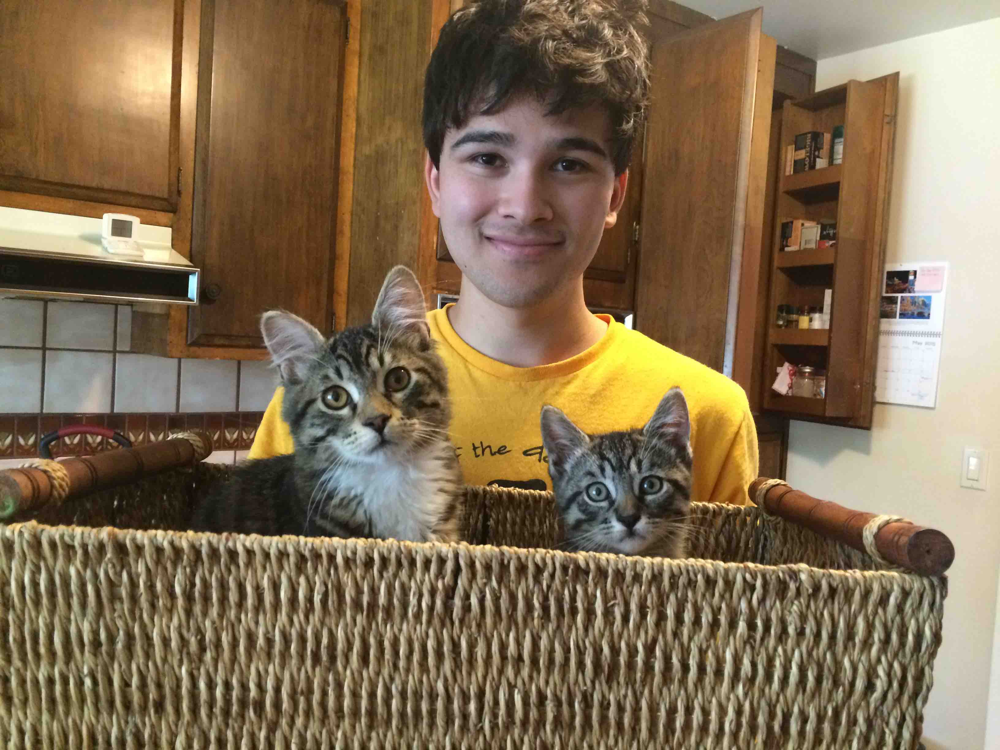
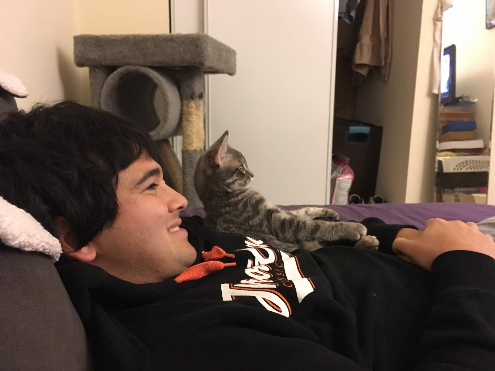
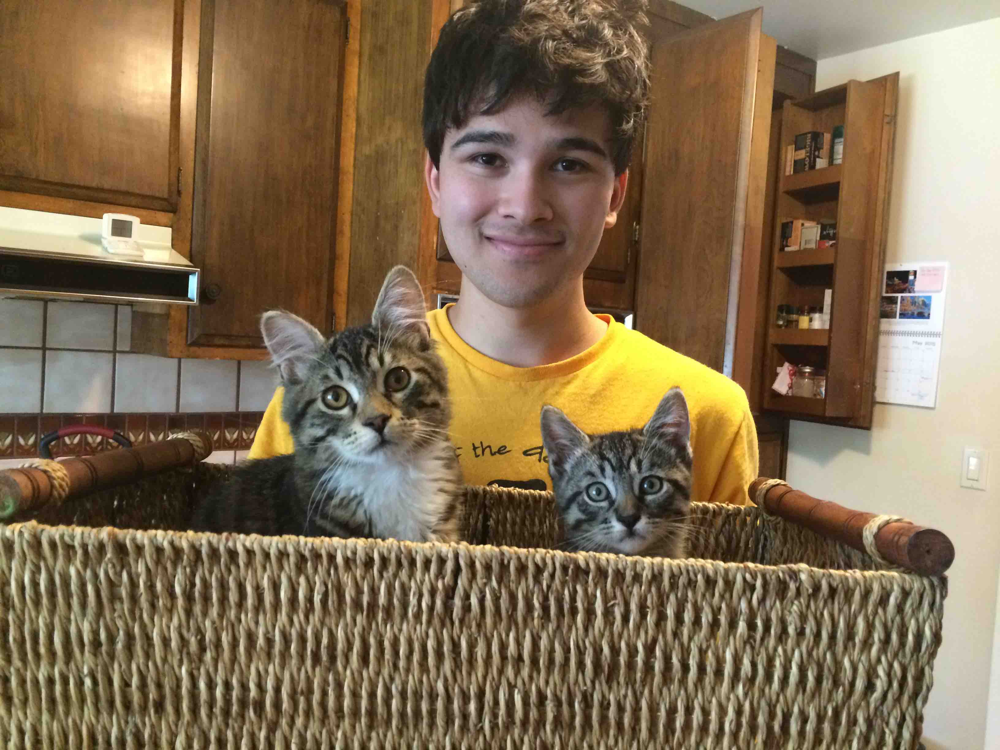
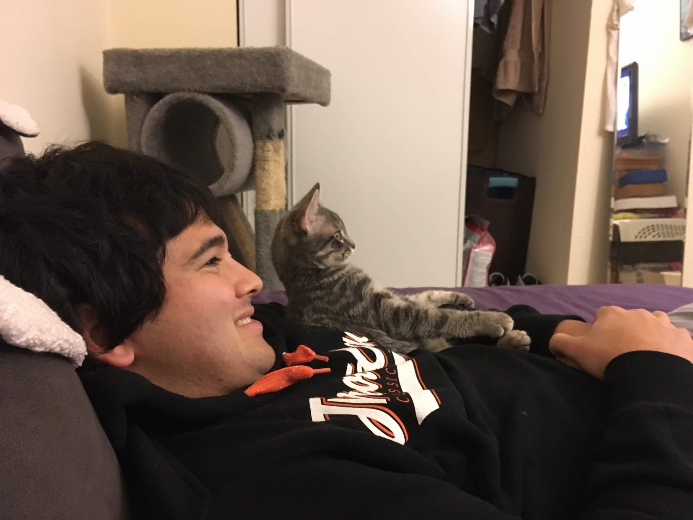

Interests
Rock Climbing
I have been rock climbing since 2008 and enjoy climbing in a variety of areas both domestically and internationally.


Simulation Baseball
Since 2008 I have participated in a hyper-realistic, 30 team, DMB simulation league (NSBL). This hobby was really my first foray into the applicable world of data and statistics. I enjoy using these leagues for honing my technical skills and practicing decision theory via a data informed, systematic, process-oriented approach in management decisions that has generated very positive results. While I have developed some bad habits (I became well versed in MS Excel, and it is now too big of a crutch in my work), overall the league has been a great experience and has taught me various skills that I would not have acquired elsewhere.
Recreational Sports
Team sports have always been a big part of my life. I primarily played competitive baseball and soccer in my earlier years, but shifted to more recreational intramural sports in college, and have continued to play these sports recreationally after graduating.
Ultimate Frisbee
Soccer


Ice Hockey

Cats
I love most animals, but I feel most strongly about cats. My cats are always fun to be around and do a great job cheering me up if I am in a bad mood.
 



Row 2: Frodo, Mowgli, Einstein, Luna.